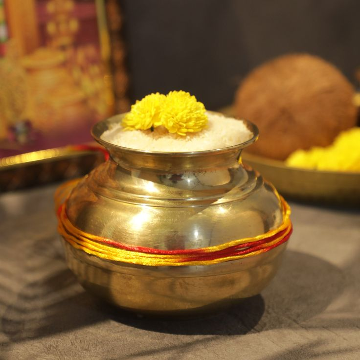

Our Vision
To build India's most trusted spiritual ecosystem, where every sacred need finds its place.

Your Digital Companion for Every Sacred Ritual
Everything you need for your spiritual journey—verified Pandits, authentic Puja Samagri, customized Puja Kits, and seamless ritual bookings, all in one place.
Puja Services • Verified Pandits • Authentic Samagri


पत्रं पुष्पं फलं तोयं यो मे भक्त्या प्रयच्छति।
"The Divine accepts even the simplest offering when it is made with true devotion."
— Bhagavad Gita


About Us
Inspired by Lal Bhandar's legacy since 1961, Samagran brings devotion, tradition, and technology together for families and devotees across India.
From verified Pandits and sacred Puja services to authentic samagri and customized kits, Samagran keeps every ritual simple, respectful, and rooted in trust.
Our Purpose
To build India's most trusted spiritual ecosystem, where every sacred need finds its place.
To make spirituality authentic, accessible, and seamless by bringing together devotion, tradition, and technology.
Two Apps
Whether you are seeking divine services or offering them, Samagran connects devotees and Pandits through one seamless ecosystem.
Puja Services

Begin your new home with sacred blessings and Vedic rituals.
2-3 hoursHome ceremony
A peaceful family ritual for prosperity, gratitude, and harmony.
2 hoursFamily ritualInvoke auspicious beginnings before important milestones.
90 minutesAuspicious start
Traditional worship for abundance, grace, and festive devotion.
90 minutesFestival puja
A powerful Shiva ritual performed with authentic offerings.
2 hoursShiva ritualSacred fire ritual for purification, blessings, and devotion.
2-4 hoursFire ritualRitual support for ceremonies rooted in family tradition.
CustomFamily ceremony
Celebrate every festival with the right Pandit and Samagri.
1-2 hoursSeasonal ritualPuja Samagri
A warm visual guide to everyday Puja essentials, festival kits, Havan items, Kalash, thali sets, flowers, and ritual offerings.
Diya, roli, chawal, flowers and core ritual items arranged for daily worship.

Warm devotional essentials for morning and evening prayer.
Fragrant essentials that create a calm temple-like atmosphere at home.
Traditional offerings used during sacred fire rituals and purification ceremonies.
An auspicious ritual symbol used in festivals, griha pravesh, and special Pujas.
Curated sets that keep important ritual items organized and ready.
Seasonal samagri arrangements for celebrations and family rituals.
Flowers, leaves, coconut, kumkum, grains and other sacred essentials.
For Devotees
Select the sacred service your family needs.
Pick a verified Pandit and preferred time.
Review details and complete secure payment.
Attend at home, temple, or online.
For Pandits
Samagran helps Pandits organize bookings, plan daily rituals, support online Puja, and connect with more devotees without losing the dignity of tradition.
Online Puja
Connect with experienced Pandits and participate in sacred rituals from anywhere through live online video Puja.
Why Choose Samagran
Profiles reviewed for dependable ritual support.
Curated essentials for each ritual and festival.
Plan home, temple, and online Puja in minutes.
Simple, protected transactions for every booking.
Choose the format that fits your family.
Helpful assistance before and after your booking.
App Screenshots
Pandit Community
Samagran helps Pandits and Pujaris reach more devotees, organize bookings, manage schedules, and conduct sacred rituals both online and offline.
Download Apps
One platform connecting devotion, tradition, Verified Pandits, sacred services, and authentic Puja essentials.
For devotees and families
For Pandits and Pujaris
FAQ